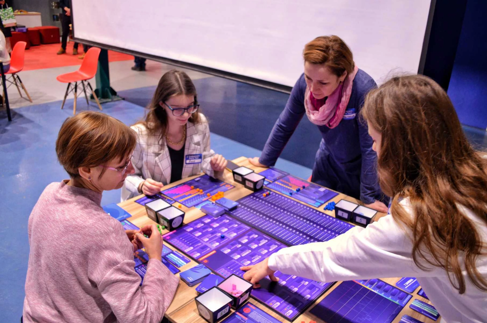
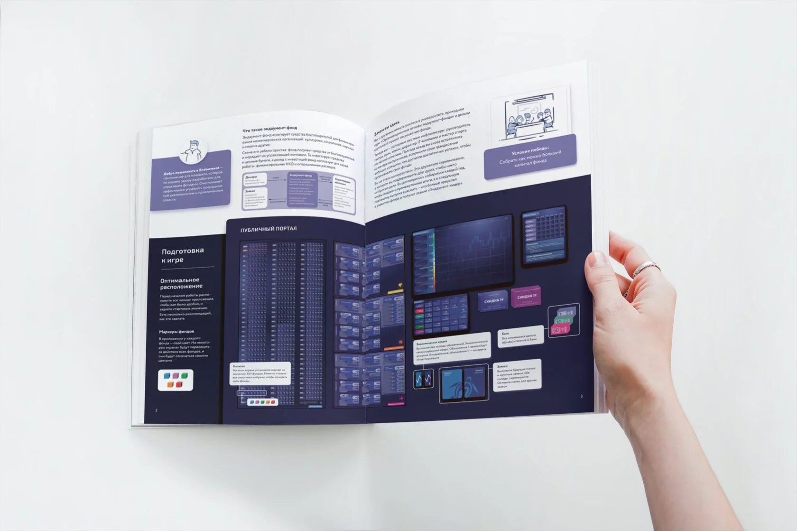
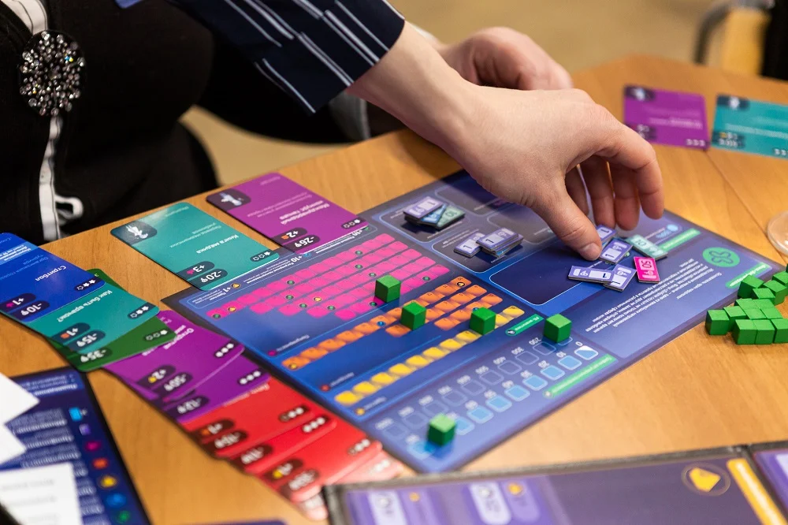
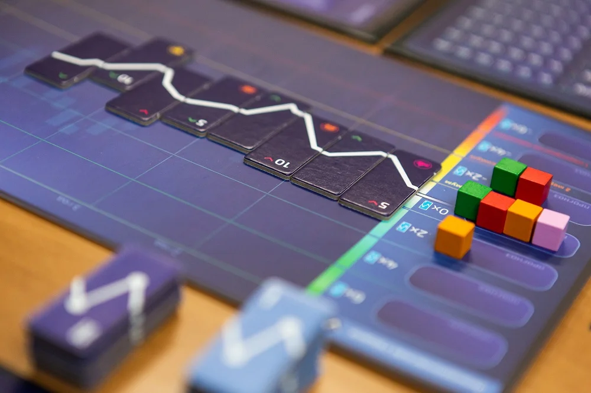
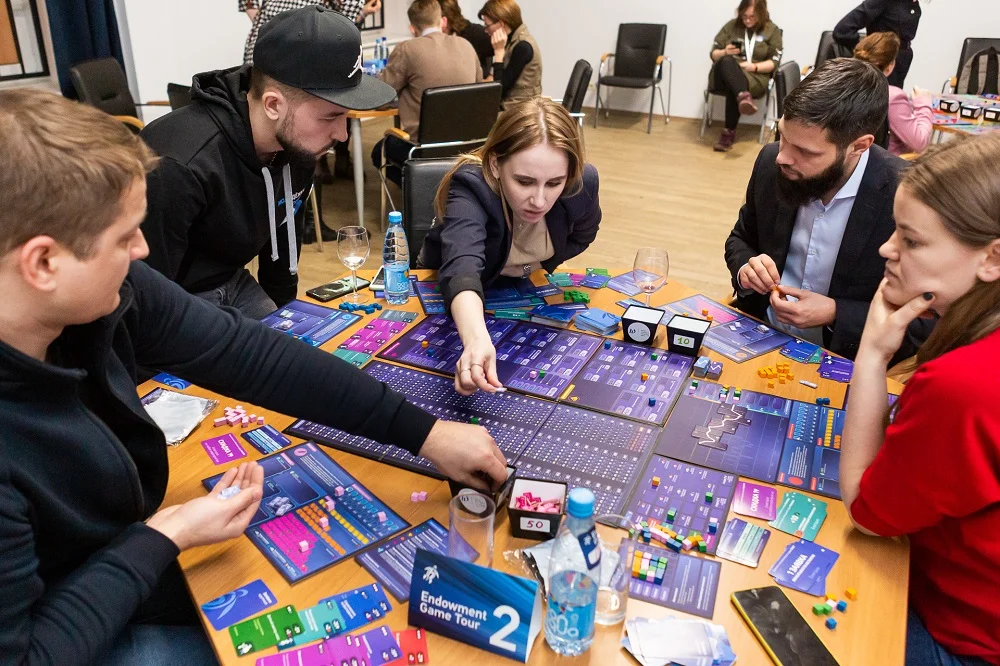
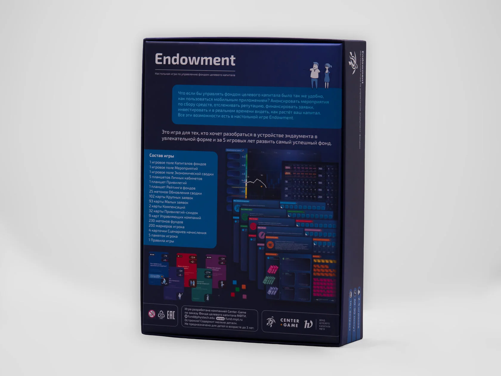
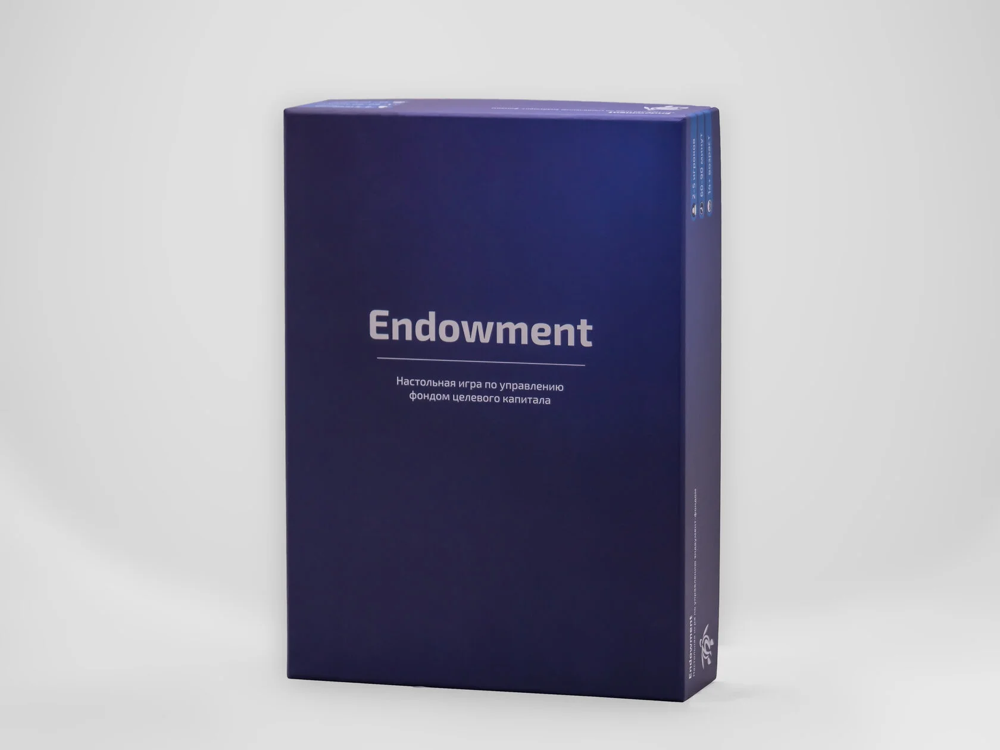
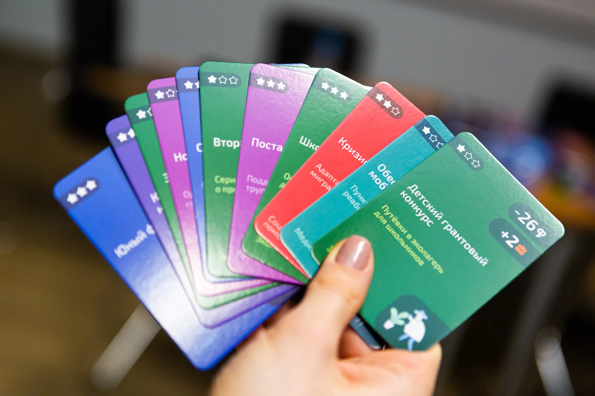
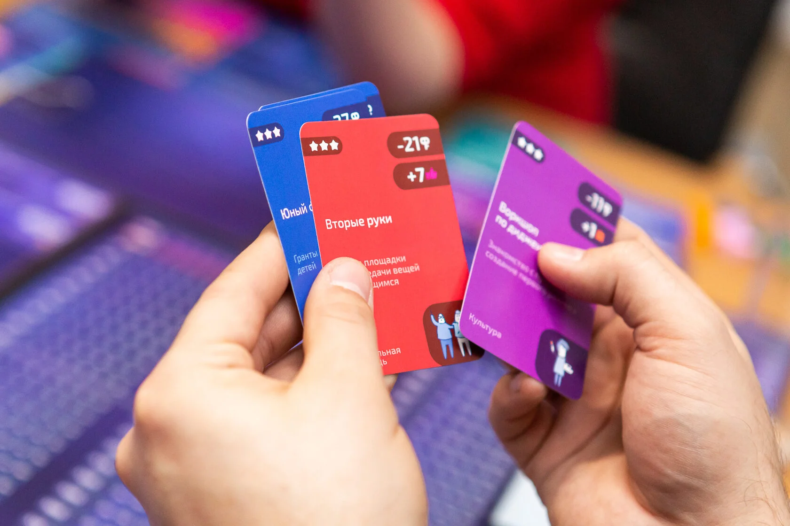

Endowment —
еврогейм про целевой капитал
Endowment —
a eurogame about endowment funds
Настольная стратегия 2–6 игроков об управлении целевым капиталом университета: фандрайзинг, выбор управляющей компании и инвестстратегии, реакция на «Чёрного лебедя», распределение дохода на проекты. PR-инструмент Фонда МФТИ — и подарок партнёрам и дарителям. A 2–6 player board strategy about managing a university endowment: fundraising, choosing a management company and investment strategy, reacting to a "Black Swan", and allocating income to projects. A PR tool for the MIPT Fund — and a gift for partners and donors.
КонтекстContext
В России мало кто понимает, что такое эндаумент-фонды и как они работают: бесконечный капитал, бесконечный горизонт, инвестиционная философия «не потерять». Сложно объяснить эту специфику слайдами — она про время и устойчивость, а не про быстрые сделки.
Фонду целевого капитала МФТИ нужен был PR-продукт, который одновременно делал бы две вещи: объяснял суть работы фонда — и был приятным подарком для дарителей и партнёров. Брифом задача была разложена на три обязательных свойства:
- Показать работу эндаумента в игровой форме, не превращая её в симулятор. Игра допускает условности.
- Исключить жёсткое соревнование. Каждый игрок работает на свой результат — как и в жизни.
- Сохранить неопределённость. Без рандома фонд — не фонд.
In Russia few people understand what endowment funds are and how they actually work: infinite capital, infinite horizon, an investment philosophy of "don't lose it". You can't explain that texture with slides — it's about time and resilience, not about fast trades.
MIPT's Endowment Fund needed a PR product that would do two things at once: communicate how the fund operates — and serve as a pleasant gift for donors and partners. The brief broke down into three mandatory properties:
- Show endowment work in a game form, without turning it into a simulator. The game can take liberties.
- No head-to-head competition. Each player works toward their own result — just like in real life.
- Keep uncertainty. No randomness — no fund.
Моя рольMy role
Работал в команде из 7 человек и отвечал за геймдизайн и визуальный дизайн всех компонентов игры: концепт, баланс экономики, иллюстрации карт, поле, токены, планшет игрока, упаковка коробки.
Что конкретно сделал:
- Спроектировал ядро игры в жанре еврогейма: 2–6 игроков, 3 фазы хода (фандрайзинг → выбор управляющей компании и стратегии → распределение дохода).
- Придумал уникальную систему экономики с графиком и жетонами, включая жетон «Чёрного лебедя».
- Спроектировал планшет игрока, который автоматизирует подсчёты — чтобы участникам не пришлось ничего считать в голове.
- Сделал визуальную систему: карты, поле, токены, иконы, типографику, упаковку.
- Прототипировал в Tabletopia — пандемия не давала встречаться вживую, и онлайн-полигон спас цикл итераций.
I worked on a 7-person team and owned game design and visual design of every component: concept, economy balance, card illustrations, board, tokens, player dashboard, packaging.
Specifically, I:
- Designed the eurogame core: 2–6 players, 3 turn phases (fundraising → choose management company and strategy → allocate income).
- Built a unique economy system with a graph and tokens, including the "Black Swan" token.
- Designed the player dashboard that automates calculations so players don't have to do math in their heads.
- Built the visual system: cards, board, tokens, icons, typography, packaging.
- Prototyped in Tabletopia — the pandemic blocked in-person sessions, and an online sandbox saved the iteration loop.
Ключевые решенияKey decisions
Жанр — еврогейм, не «монополия». В евроиграх игроки не сталкиваются напрямую: каждый строит свою стратегию, ресурсы общие, побеждает тот, кто эффективнее распорядился возможностями. Это идеально совпадало с философией эндаумента и с просьбой клиента «без жёсткого соревнования». Параллельно жанр снимает токсичность за столом — игра становится подарком, а не баталией.
Экономика как живой график, а не таблица. Главная дидактическая идея игры — что инвестиционный климат и готовность дарителей жертвовать связаны и колеблются. Я сделал это видимым: дважды за ход игроки тянут жетон, который двигает график экономики вверх или вниз. От положения графика зависит сила фандрайзинга и доходность инвестиций. Игроки видят рынок, а не считают его.
Жетон «Чёрного лебедя». Эндаумент живёт десятилетиями, и в реальности всегда случается то, чего нельзя предугадать. Этот жетон обрушивает экономику в любой момент, где бы она ни находилась. Без него «график рынка» воспринимался бы как контролируемая шкала. С ним становится понятно, зачем фондам диверсификация и подушка.
Планшет игрока без калькулятора. Управление фондом — это работа с процентами и категориями капитала: «тело» фонда, % на операционку, % обязательно в целевые проекты. Я разнёс это на физические зоны планшета: куда положил жетон — туда деньги и ушли. Игроки почти не считают сами, а правила фонда усваивают через манипуляции с компонентами.
Genre — eurogame, not "Monopoly". In eurogames players don't clash directly: each builds their own strategy, resources are shared, and the winner is whoever managed opportunities better. This matched both the philosophy of an endowment and the client's request for "no head-to-head competition". As a side effect the genre kills toxicity at the table — the game becomes a gift, not a brawl.
Economy as a live graph, not a spreadsheet. The core teaching idea was that investment climate and donors' willingness to give are linked and fluctuate. I made this visible: twice per turn players draw a token that moves the economy graph up or down. The graph's position drives fundraising power and investment yield. Players see the market instead of computing it.
The "Black Swan" token. An endowment lives for decades, and in reality something unforecastable always happens. This token crashes the economy at any moment, no matter where the graph stands. Without it the "market graph" would feel like a controlled dial. With it players understand why funds need diversification and a safety buffer.
A player dashboard without a calculator. Running a fund means working with percentages and capital categories: the fund's "body", % to operations, % obligatorily into target projects. I split this across physical zones of the dashboard: putting a token in a zone is the spend. Players barely calculate; they internalize fund rules by handling components.
Результаты Results
— На грант фонда Потанина игру сделали PR-инструментом для презентации эндаумента университетам и фондам по всей стране. С 2021 года Endowment играли в МФТИ, СФУ и других вузах. — With the Potanin grant the game became a PR tool to present endowment work to universities and funds across the country. Since 2021 Endowment has been played at MIPT, SibFU, and other universities.
Компоненты и фото Components & photos









Что узналTakeaways
Главное наблюдение: выбор жанра — это половина дидактики. Когда заказчик сказал «без жёсткого соревнования» — это уже было решение про жанр, не про правило. Жанр еврогейма дальше сам диктовал, как должны работать ресурсы, ходы и победа. Если бы я попытался прикрутить «не-конкуренцию» к классической Монополии, это была бы война с механикой.
Второе: сложные темы проще объяснять компонентами, чем словами. Планшет игрока с физическими зонами под «тело», «операционку» и «целевые проекты» научил людей работе фонда быстрее, чем любой слайд. Манипуляция с предметом фиксирует структуру в моторике.
Key observation: genre choice is half the didactics. When the client said "no head-to-head competition", that already was a genre decision, not a rule. The eurogame genre then dictated how resources, turns, and winning conditions should work. If I had tried to staple "no competition" onto Monopoly, it would've been a war with the mechanics.
Second: hard topics are easier to teach with components than with words. A player dashboard with physical zones for the "body", "operations", and "target projects" taught fund mechanics faster than any slide. Handling an object encodes the structure in muscle memory.
ANCOR · ДНК Лидера → ANCOR · Leader DNA →
Геймификация 6-месячной программы развития лидерства. Доходимость 80%. Gamification of a 6-month leadership program. 80% completion.